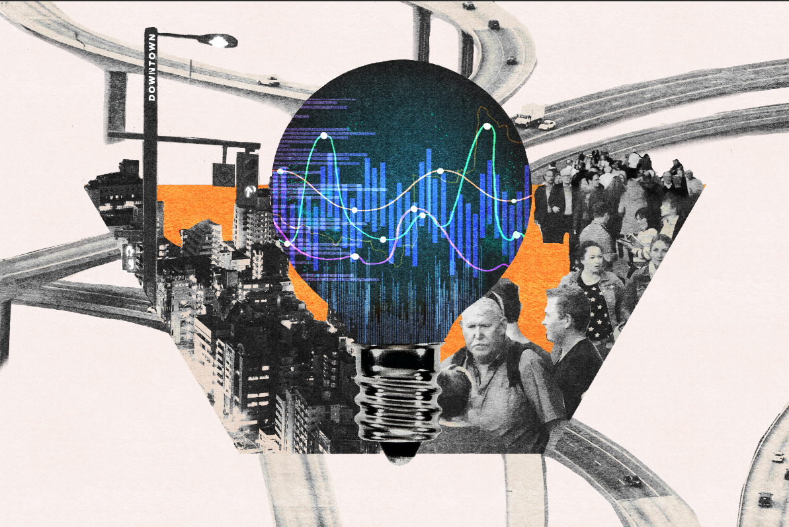
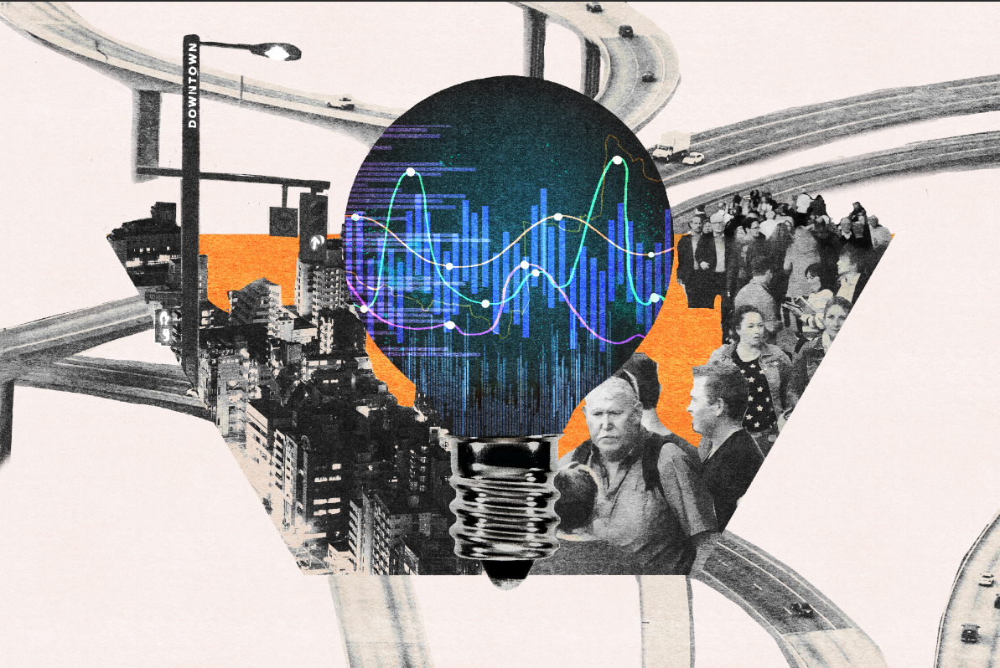

2021-2022 research with Lydia B. Chilton (Computational Design Lab)
Lydia Chilton’s research focuses on human-computer interaction -- particularly on computational design and analyzing the design process through a computational lens.
The Computational Design Lab is a research group in the Computer Science Department of Columbia University with the goal of building AI tools that enhance people's productivity.
The illustrations, collages, and animations made below were based on Columbia Daily Spectator articles and DSI research papers.
SymbolFinder, an app developed by students at Lydia's lab, was used in the development to determine its usefulness in ideation.
The pieces below were arranged to better understand how we can improve the ideation process for articles (particularly news related ones), and the key patterns behind successful pieces.
 
